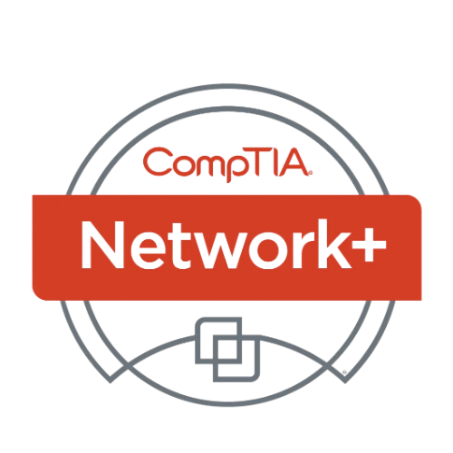
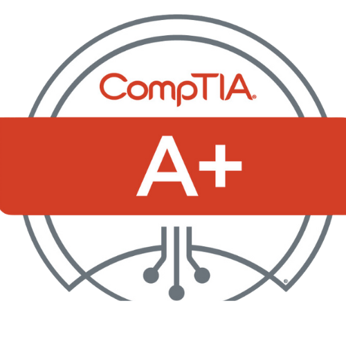

Technical Skills
Operating Systems: Windows: macOS, iOS, Android Cloud & Identity Management: Microsoft Azure, Active Directory, Okta SSO Tools & Software: Microsoft365, Intune Endpoint Manager, Manage Engine, JAMF, SCCM Networking: DHCP, VPN, Network Troubleshooting, Endpoint Security Soft Skills: Exceptional customer service, problem-solving, cross-department collaboration
- AZ-900
- CompTIA Network +
- CompTIA A +
Full Stack Coding BootCamp